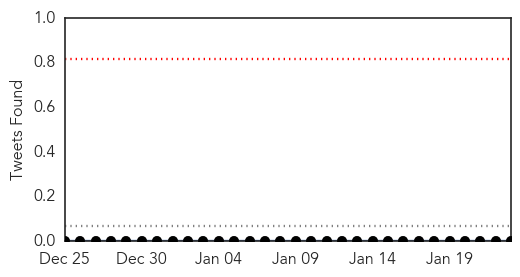
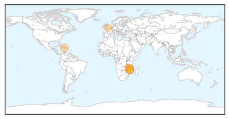

Chikungunya
30-Day Web Trend
3 alerts, 0 warnings
30-Day Twitter Trend
0 alerts, 0 warnings

Article Locations
Article Confidences

Top Articles:
Top Tweets:
-
No tweets found for Jan 23, 2015
Cholera
30-Day Web Trend
5 alerts, 3 warnings
30-Day Twitter Trend
0 alerts, 0 warnings

Article Locations
Article Confidences
Top Articles:
- 0.919
- Malawi flood victims in dire need
- 0.902
- 'Dire' needs of southern African flood survivors unmet two weeks on
- 0.900
- Dire needs of southern African flood survivors unmet two weeks on
- 0.884
- "Dire" needs of southern African flood survivors unmet two weeks on
- 0.654
- Flood-hit Malawi faces aid deficit - Malawi
- 0.638
- UN Security Council Members Arrive in Haiti for 3-Day Visit
- 0.622
- Flood-hit Malawi faces aid deficit
- 0.622
- Flood-hit Malawi faces aid deficit
- 0.521
- UN Security Council members arrive in Haiti for 3-day visit
Top Tweets:
-
No tweets found for Jan 23, 2015